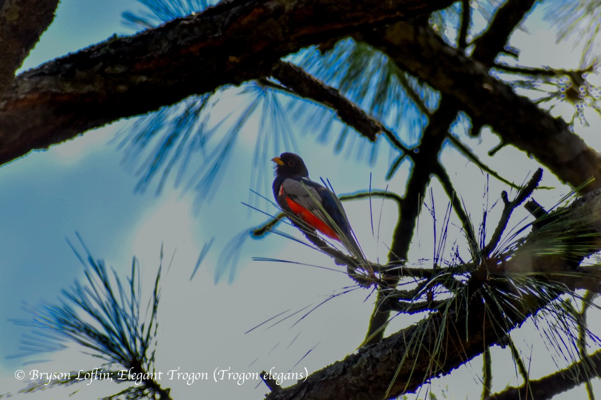
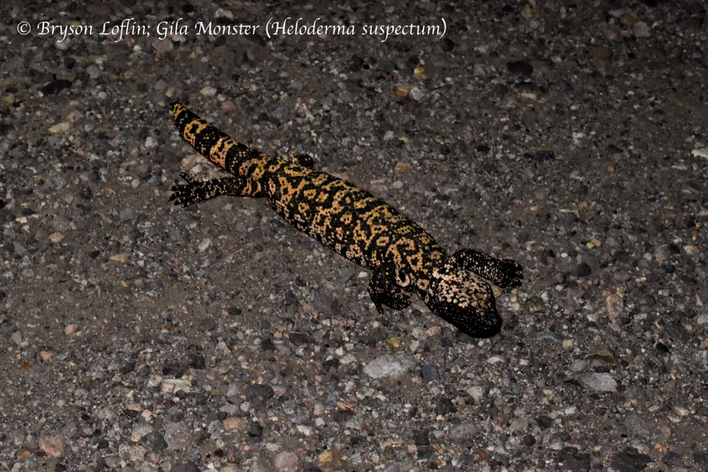
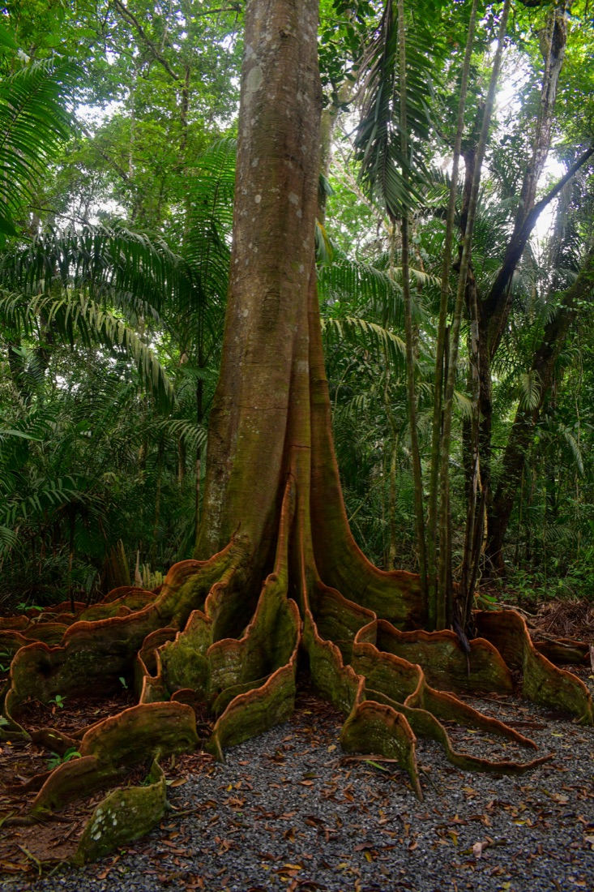
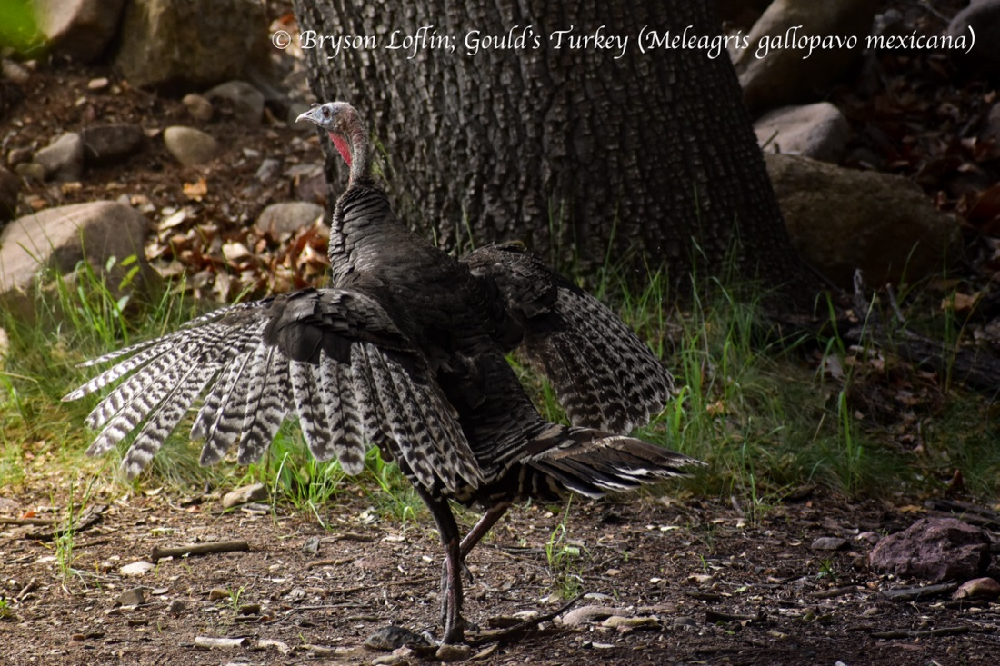

01
A social-relations model of the whole colony
Fitting a STRAND social relations model across all of our long-term data to separate reciprocity, kinship, and individual generosity in grooming and food sharing.
Bayesian networksI'm a PhD student using vampire bats to ask how — and why — animals build cooperative relationships, and what happens when a partner stops giving back.
Cooperation is everywhere in nature, yet we still understand surprisingly little about how two animals go from strangers to trusted partners.
I'm a PhD student in Ecology and Evolutionary Biology, working in the Carter Lab. I combine long-term behavioral data, field experiments at the Smithsonian Tropical Research Institute in Panamá, and Bayesian social-network models to study how cooperative relationships form, stabilize, and sometimes fall apart. My work centers on vampire bats — one of the few systems where the give-and-take of cooperation can be manipulated and measured directly — but the questions reach across the social animal kingdom. When I'm not with the bats, I'm usually behind a camera documenting the wildlife around me.
Fitting a STRAND social relations model across all of our long-term data to separate reciprocity, kinship, and individual generosity in grooming and food sharing.
Bayesian networksBuilding a computer-vision pipeline to re-identify individual bats from video — testing whether 22 individuals are visually separable without handling them.
Computer visionExperimentally manipulating whether a partner helps or defects, then measuring how bats adjust who they invest in — a direct test of reciprocity.
Field experiment


